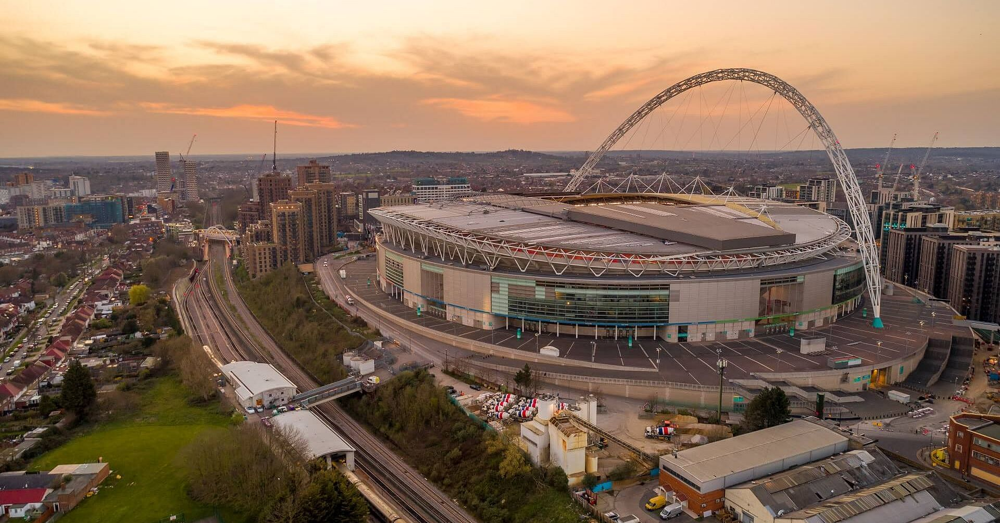

Clubes que participan en la UEFA Champions League 2025
La Champions League reúne cada año a los mejores equipos de Europa. A continuación se muestra una lista de clubes clasificados a través de sus ligas nacionales.
Equipos por Liga
España (LaLiga)
- Real Madrid
- FC Barcelona
- Atlético de Madrid
- Girona FC
Inglaterra (Premier League)
- Manchester City
- Arsenal
- Liverpool
- Aston Villa
Italia (Serie A)
- Inter de Milán
- Juventus
- AC Milan
- Bologna
Alemania (Bundesliga)
- Bayern Múnich
- Bayer Leverkusen
- RB Leipzig
- Borussia Dortmund
Francia (Ligue 1)
- Paris Saint-Germain
- AS Mónaco
- Lille OSC
- Stade Brestois
Estadio de Webley
Este estadio es donde mas finales de la champions se han jugado (7)
